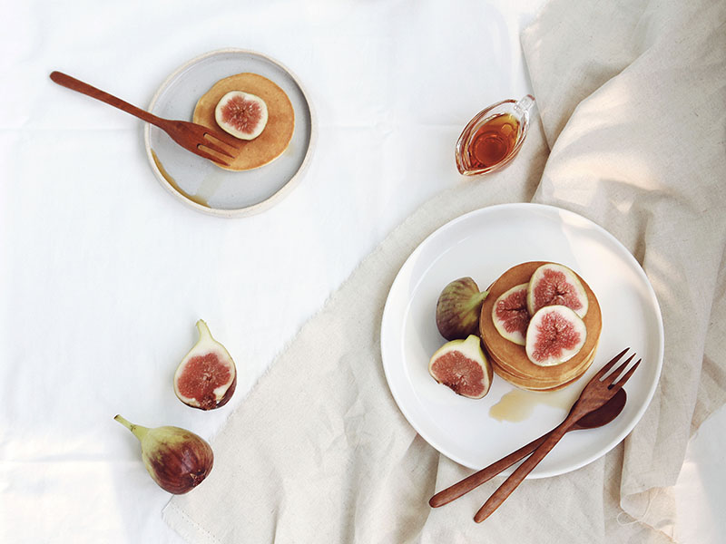

별거 없지만 있어 보이는 푸드 스타일링 따라 하기.
/
팬케이크
-
외국에서는 아침으로 먹는 팬케이크.
우리나라에서는 디저트나 간식으로
요즘에는 브런치로도 많이 먹습니다.
팬케이크는 꽤 오래전부터 믹스의 형태로 보급된 편입니다.
제가 어렸을 때도 아빠가 유일하게 해주시는 음식이 믹스로 만든 팬케이크였으니까요.
달걀과 우유만 넣고 섞고 프라이팬에 구우면 완성되는 케이크라니 얼마나 간편한가요?
이제 팬케이크 믹스는 편의점에서도 쉽게 찾아볼 수 있게 되었습니다.
그럼 이쯤에서 대부분의 사람들이 드는 의문이 있습니다.
‘ 근데 나는 왜 포장지의 팬케이크처럼 되지 않을까? ’
맛은 둘째치고 대부분 얼룩덜룩한 팬케이크를 드셔보셨을 것입니다.
오늘은 이러한 분들을 위한 팬케이크 스타일링 방법을 알려드리려고 합니다.
-
Recipe
- 볼에 달걀과 설탕을 넣고 잘 저어줍니다.
- 우유도 함께 넣고 골고루 섞이도록 저어줍니다.
- 박력분을 체에 쳐서 넣고 걸쭉한 농도가 되도록 섞어줍니다.
- 중불로 달궈진 팬에 포도씨유를 약간 둘러주고 키친타월로
포도씨유를 가볍게 닦아내 줍니다. - 완성한 반죽을 국자에 담아 팬에 부어 줍니다.
- 팬케이크에 기포가 뽕뽕뽕 올라오면 뒤집어 줍니다.
- 뒤집고 난 후 2~3분 정도 노릇한 색이 나도록 구워주면 팬케이크는 완성입니다.
재료
달걀 2개, 설탕 3숟가락, 우유 1/2컵, 박력분 1컵, 포도씨유 약간,
무화과 3~4개, 메이플 시럽 적당량
굳이 많이 저을 필요는 없습니다. 1~2분 정도만 저어줍니다.
이 단계에서도 마찬가지입니다.
여기서도 역시 많이 섞을 필요는 없습니다. 날가루가 안 보일 정도로 섞어주세요.
이 단계에서 많이 섞으면 질긴 팬케이크를 드실 수 있습니다.
※ 물론, 팬케이크 반죽은 굳이 만들지 않고 믹스를 사서 레시피대로 만드는
것이 더 간편하고 좋습니다. 팬케이크를 예쁘게 만드는 방법은 굽는 것이 중요합니다.
팬은 20cm 정도 떨어져서 손을 대봤을 때 따뜻하다 싶을 정도로 달궈줍니다.
포도씨유가 많은 상태에서 팬케이크를 굽게 되면 튀긴 팬케이크가 완성되거나
팬케이크의 윗면의 색이 균일하지 않게 될 수 있으니 귀찮더라도 꼭 닦아내 줍니다.
일정한 크기의 팬케이크를 만들려면 일정한 양의 반죽을 부어야만 합니다.
인간 계량기나 팬케이크 장인이 아니라면 양을 잴 수 있는 국자를 꼭 사용하시길 바랍니다.
팬에 국자로 반죽을 부을 땐 너무 가까이에서 붓는 것보다는
20~25cm 정도 떨어져서 부으면 동그란 팬케이크를 쉽게 만들 수 있습니다.
괜히 최현석 셰프의 소금 뿌리기를 따라 하거나
파워 X 손이 아닌 이상 동그란 팬케이크가 될 겁니다.
* 솔직히 뒤집는 건 눈치껏 뒤집어야 합니다.
팬케이크의 색깔을 결정하는 가장 중요한 부분입니다.
뒤집었을 때 사진에서 늘 보던 노릇노릇한 색이 나왔다면 완벽한 성공입니다.
* 불 조절은 알아서 잘 해야 합니다.
중불과 약불을 오가며 아름다운 브라운 빛깔의 팬케이크를 완성하세요!
-
Styling
- 플레이트는 무난한 화이트 식기나 크림색을 사용합니다.
- 준비한 플레이트에 일정한 크기의 팬케이크를 보기 좋게 층층이 쌓아줍니다.
- 준비한 무화과를 1개~ 2개 정도는 반으로 가르고
나머지는 슬라이스해서 올려줍니다. - 커트러리는 내추럴한 우드톤을 사용합니다.
- 먹는 게 아니라 촬영의 목적이라면
굳이 메이플 시럽을 뿌리고 찍을 필요 없습니다. - 무화과 팬케이크의 배경은 역시 내추럴한 톤의 린넨 소재가 좋습니다.
곁들일 과일인 화려한 무화과를 강조하기 위해서입니다.
플레이트의 컬러는 개인의 취향이지만 디자인 감각이 떨어지는 편이라면
제발 무난한 컬러를 사용하세요.
높이는 보기 좋은 만큼 쌓아주면 됩니다. 저는 7장 정도 쌓았습니다.
무화과는 단면의 컬러나 모양이 예쁘기 때문에 잘라서 사용할 것을 권합니다.
무화과를 예쁘게 데코 할 자신이 없다면 사진에 보이는 것처럼 올려줍니다.
커트러리는 고급스럽고 화려한 무늬가 있는 것보다는
내추럴한 우드톤의 커트러리가 잘 어울립니다.
메이플 시럽은 묽어서 질감이 잘 보이지 않고 금방 팬케이크에 흡수됩니다.
하지만 취향에 맞춰 뿌려먹으면 더 맛있는 팬케이크를 드실 수 있습니다.
전체적인 분위기가 내추럴하므로 배경도 맞춰줍니다.
마치 ' 나는 늦잠을 자고 일어나 침대에서 이렇게나 예쁜 브런치를 먹고 있어!ㅎ '
같은 내추럴함입니다.
+
브런치의 완성은 요거트
팬케이크 만으로 뭔가 심심하다면 요거트를 곁들이세요.
하얀 요거트 위에 슬라이스 한 무화과와 하루견과를 예쁘게 올리면
정말 간단하지만 있어 보이는 플레이팅이 완성됩니다.
예쁘게 플레이팅해서 먹으면 아무 맛도 없는 요거트가 조금은 먹기 나아질지도 모릅니다.
하지만 하얀 요거트는 저처럼 하얀 천 위에 하얀 그릇에는 담지 않기를 추천합니다.
무화과와 하루 견과만 보이니까요.^^ㅎ
꼭 무화과가 아니더라도 다양한 제철 과일로 팬케이크를 만들어
자신만의 팬케이크 스타일링을 해보시기 바랍니다.